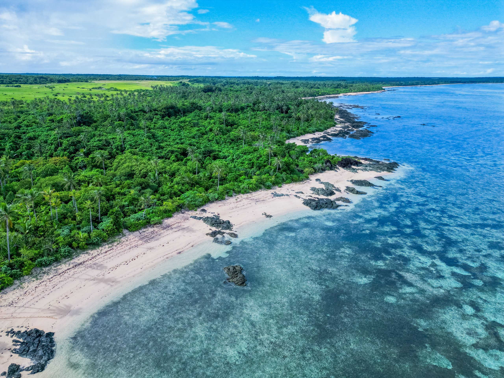
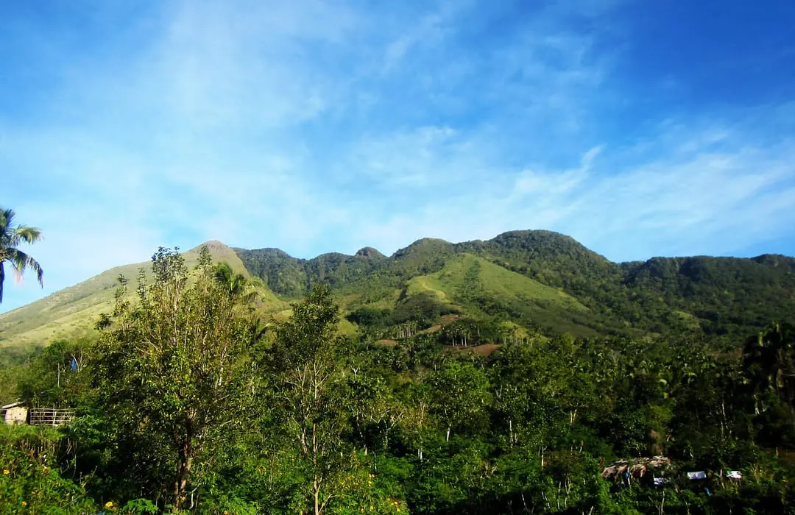
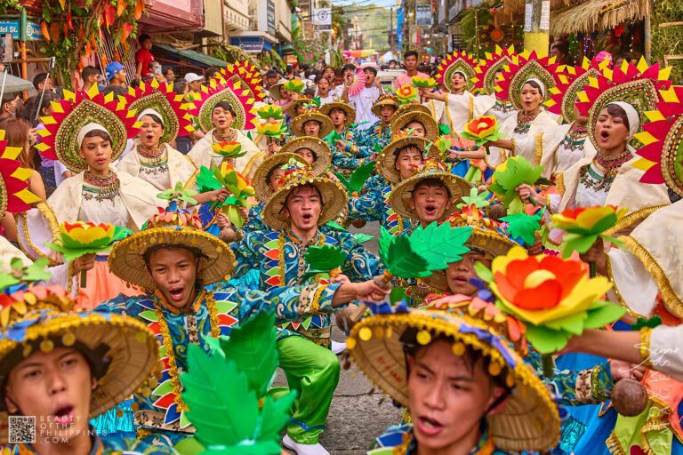

Island Getaways
Experience clear waters, rock formations, and camping spots across Padre Burgos and Mauban.
"Discover golden beaches, mystic mountains, and rich heritage"
Connecting travelers to the natural wonders and vibrant traditions of Southern Luzon.

Experience clear waters, rock formations, and camping spots across Padre Burgos and Mauban.

Explore mountain ranges and waterfalls in Real, Lucban, and Quezon National Park.

Visit century-old basilicas, local food spots in Tayabas, and traditional heritage sites.